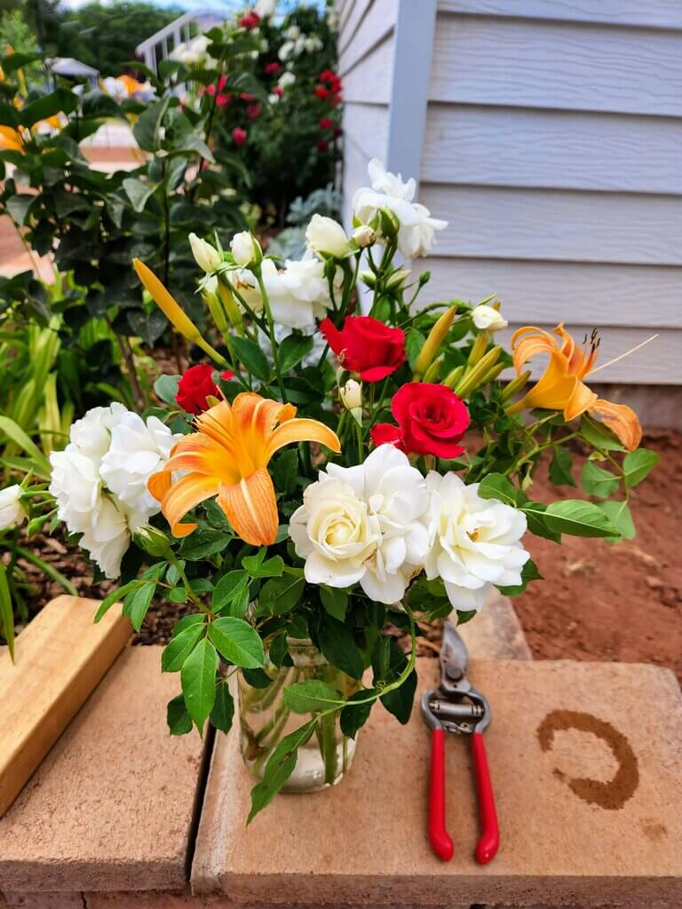
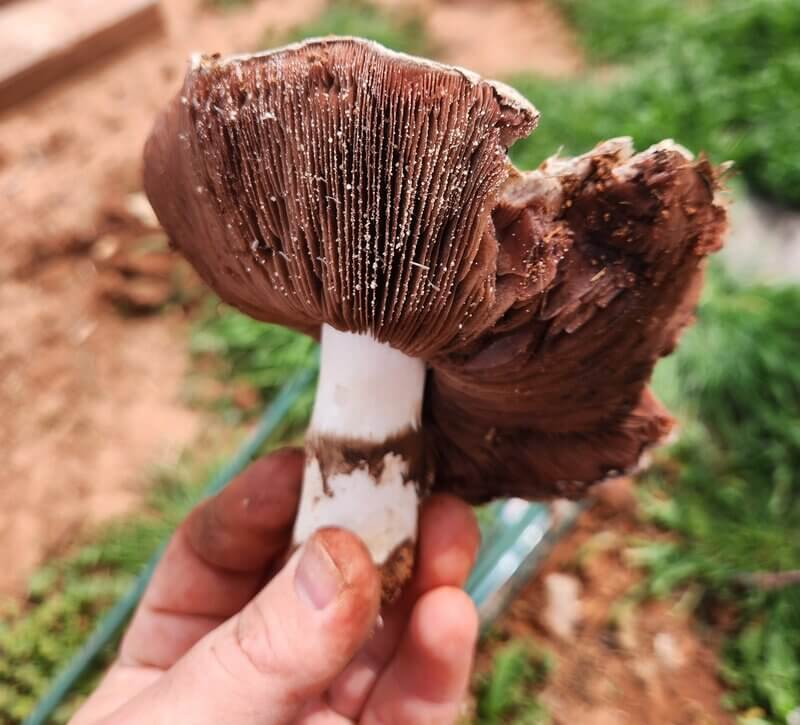
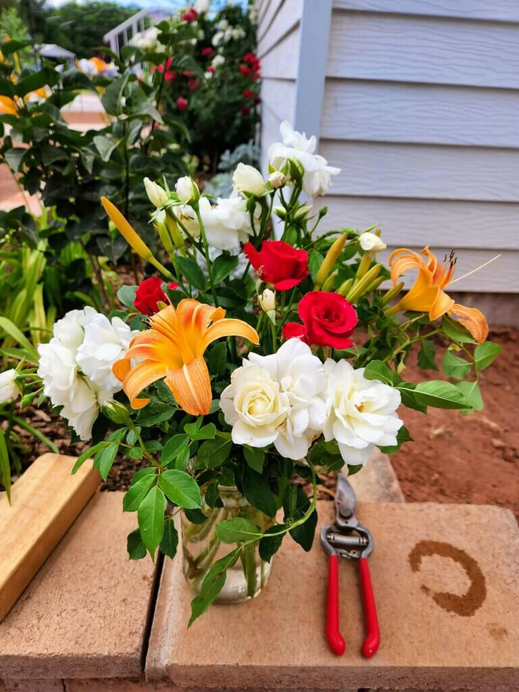
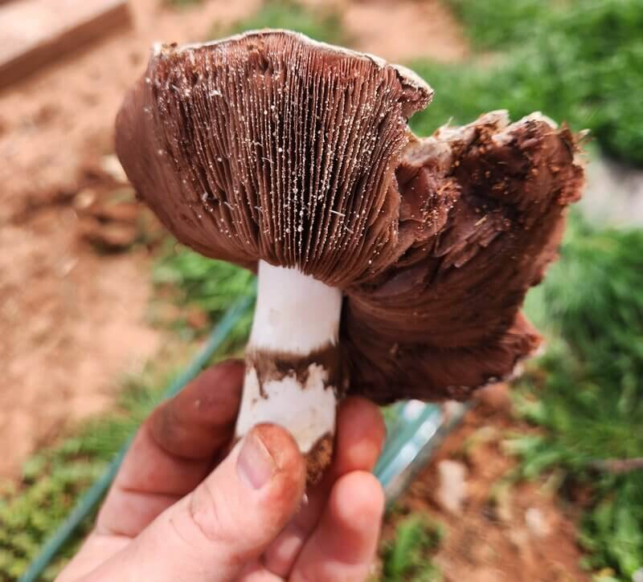

Home
I love gardening!
There are many wonderful reasons, but one stands out among them: gardening has been wonderful for my mental health. Something about having dirt under my fingernails and fresh produce on my table makes such a difference to me. It's hard to be pulled into an anxiety spiral when you've got the sun on your face, the promise of fruits and vegetables and flowers to come, and a weird little bug to watch.
New this year
Very early this spring, I planted peas and carrots. They took a while to start - I planted before we could turn the drip system on, so watering was sporatic and infrequent. However, they have both done very well! They have been easy and productive. By early June, my family had already started enjoying snacks of the thinned baby carrots and crunchy sweet peas. We thinned carrots a little late, but that meant they were big enough to eat. My son has enjoyed picking peas and watching them grow, and was excited to help me thin carrots and see how much they had changed in just a few weeks. And a few weeks after thinning, we had some ready to harvest. How exciting!
 



Why put this on a website?
I decided to put this on a website because it would make sharing my gardening plans easy. I can share my successes and failures, my ideas, and my recipes with anyone - friends and family who don't live near, local gardening groups, and anyone interested in ideas for a small home garden.